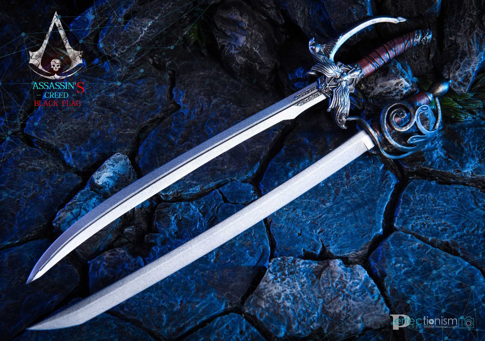
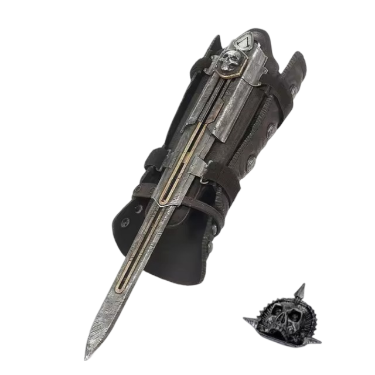
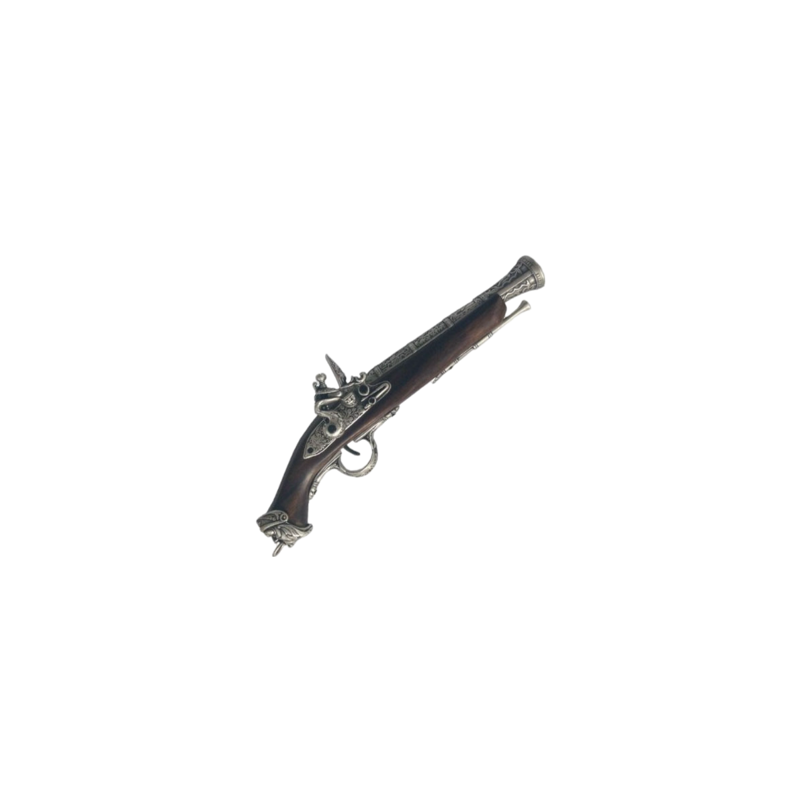

Edward James Kenway (1693 – 1735) was a Welsh-born British privateer-turned-pirate and a member of the West Indies and British Brotherhoods of Assassins. He was the father of Haytham Kenway, the founder of the Colonial Rite of the Templar Order, and the grandfather of Ratonhnhaké:ton, a prominent Colonial Assassin. Through this line, he is an ancestor of William and Desmond Miles, as well as Victor Flores Castillo. He is additionally an ancestor of Noa Kim.
Born to humble farmers, Edward always sought to acquire riches and fame. He became a privateer for the Royal Navy early in his life and, once accepted, found himself stationed in the West Indies. However, an abrupt end to the War of the Spanish Succession and the promise of gold, glory and fame eventually seduced him into a life of piracy. It was during this quest that Edward first encountered the Assassins and Templars, and became embroiled in their struggle.
A cutlass is a short, broad sabre or slashing sword, with a straight or slightly curved blade sharpened on the cutting edge, and a hilt often featuring a solid cupped or basket-shaped guard. It was a common naval weapon during the early Age of Sail.
The Hidden Blade is the signature weapon of the members of the Assassin Brotherhood, designed as their primary means of enacting assassinations. Consisting of a blade that can be discreetly extended or retracted from a bracer or gauntlet, the Hidden Blade's portability and concealability complement the Assassins' trademark affinity for stealth and freerunning. It allowed an Assassin to eliminate a target while drawing virtually no attention to themselves, and the techniques developed for its use often ensure near-instantaneous death.
Pirates had several portable gunpowder weapons to choose from which they could use when boarding target vessels. All of them had the disadvantage that they could only fire one shot and then had to be reloaded, which took time that often was not available in the heat of battle. In addition, gunpowder weapons needed dry weather to work best, they were often unreliable and misfired or exploded, and they were not particularly accurate. Some pirates compensated for these defects by carrying several weapons at once, the most famous of these was Edward Teach, aka Blackbeard (d. 1718), who was said to have bristled with six pistols hung from sashes across his torso.
